Assigning and unassigning a submission to a reviewer
For event organisersNot an organiser?
Learn how to automatically assign, manually assign and un-assign submissions to reviewers.
Assigning submissions to a reviewer(s) is a simple process. Before you can assign reviewers, you will need to add them to the system. Learn how to automatically assign, manually assign and un-assign submissions to reviewers.#
See Manage users for instructions on adding reviewers. It would also be useful to be familiar with The Review Tables first.
Any rows with a pink background are incomplete submissions, not incomplete reviews.
Go to Event dashboard → Abstract Management → Reviews → By Submissionand click on Assign Reviewers at the top of the table.
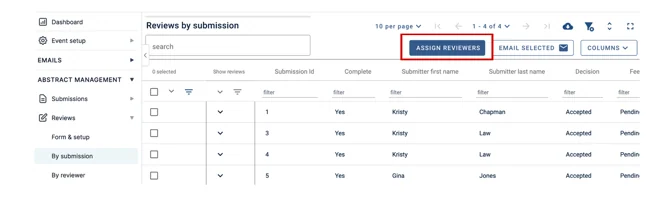
A pop-up window will open to the right of the page.
Under the Auto Assign Tab you can set up how you want to auto-assign submissions to reviewers.
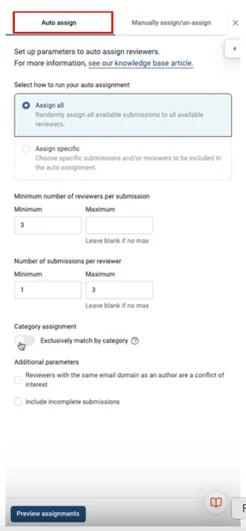
To randomly assign submissions, tick the assign all button.
You may want to assign specific submissions and/or reviewers to auto-assign; if so, click here for instructions on how to do this.
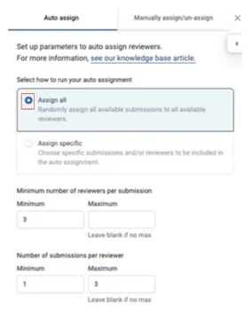
You can thenadd the minimum and maximum number of reviewers per submission, and the minimum and maximum number of submissions per reviewer.
If there isn’t a maximum number for either of these, then please leave the box blank.
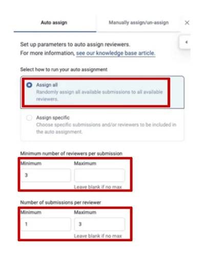
If you would like to exclusively match by category then click the toggle on.
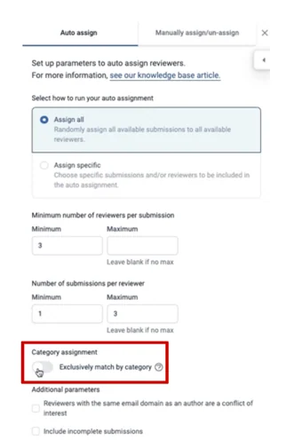
You can also prevent reviewers with the same email domain as an author from reviewing their submissions by selecting the tick box.
Add incomplete submissions for reviewing by clicking on the tick box.
When you are finished, click on the Preview Assignment Button at the bottom of the page.
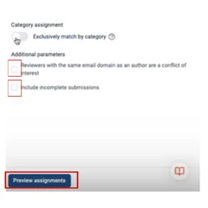
How to re-assign reviews & and send new submissions to reviewers
If later you need to reassign reviews or send new submissions to reviewers, when you click on Assign Reviewers at the top of the table, you will notice that three options are now available to you:
-
Assign Submissions
-
Reassign Incomplete Reviews
-
Assign specific
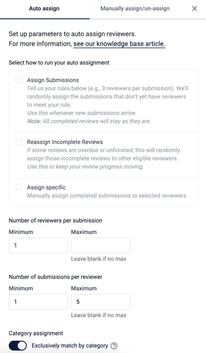
Assign Submissions
This options allows you to assign reviews (based upon your rules (No of reviewers per submission and No of submissions per reviewer)) that have yet to be completed to new reviewers. You can also use this option if your review process is underway and you have new submissions that need assigning to reviewers.
Reassign All Incomplete Reviews
If some reviews are unfinished or overdue, this option will allow you to reassign those incomplete reviews to other reviewers. This helps keep your review process moving.
Assign Specific
This option allows you to manually assign specific submissions and/or reviewers for assignment, allowing greater control over which submissions are reviewed by whom
Once you’ve selected which option to proceed with, you can set your parameters below and then click on Preview Assignments.
Assign Specific Submissions & Reviewers
If you choose Assign Specific after clicking the Next button, you’ll be taken to a different screen. This is where you will select the specific submissions and/or specific reviewers.
As shown in the image below, you can either select the specific submission/s by ticking the box next to the submission title (1) OR type the submission ID number into the box on the right-hand side (2).
You can also search for the submission by using the search bar at the top (3).
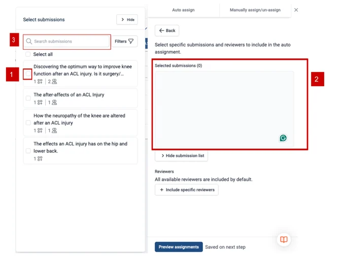
To select specific reviewers click on the Include specific reviewer button and as shown in the image below, you can either select the specific reviewer by ticking the box next to their email address on the left screen (1) OR type the reviewer email address into the box on the right-hand side (2).
You can also search for a reviewer by typing their email address into the search bar at the top (3).
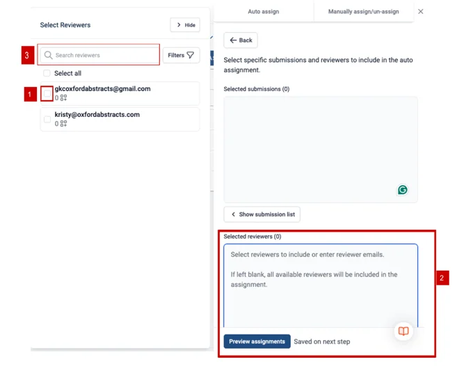
Once completed, you can click on Preview assignments to view a table that has been filtered to show you the newest assignments of submissions to reviewers.
If you’re happy with this, you can click the Save assignments button at the bottom left of the screen.
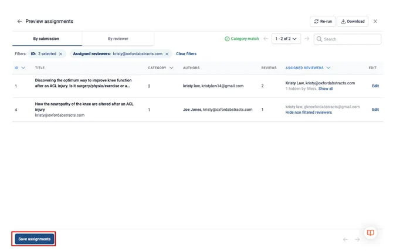
How to Manually Assign Submissions for Reviewing
From your dashboard, select from the left-hand column Abstract Management > Reviews > By Submission.
Then click on the Assign Reviewers Button at the top right of the table.
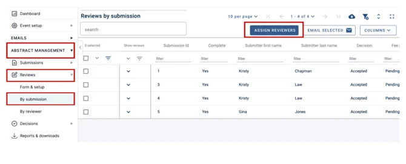
On the screen that pops up to your right, select the Manually Assign/Unassign tab.
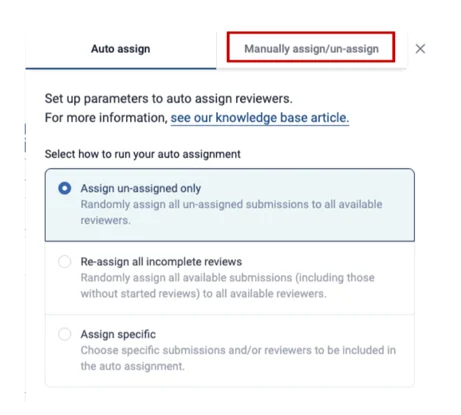
As shown in the image below, you can either select the specific submission/s by ticking the box next to the submission title on the left side of the screen (1), OR type the submission ID number into the box on the right-hand side (2).
You can also search for the submission by using the search bar at the top (3).
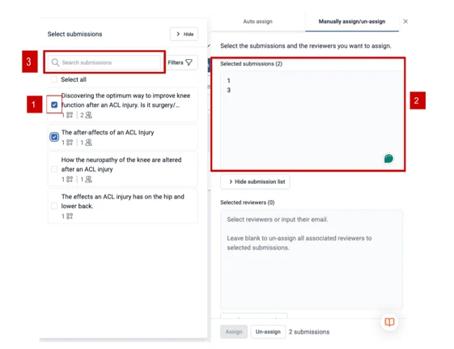
Next, you need to select your reviewers. Click on the Show Reviewers List button.
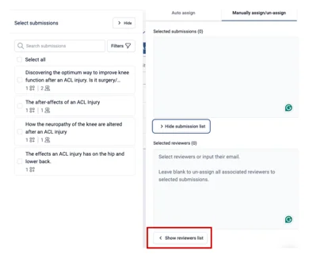
As shown in the image below, you can either select a specific reviewer/s by ticking the box next to their email address on the left side of the screen (1) OR type the reviewer's email address into the box on the right-hand side (2)**.
You can also search for reviewers by using the search bar at the top (3).
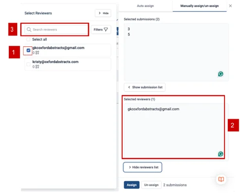
Once the submission and reviewers have been selected, click the Assign button at the bottom of the page.
How To Unassign Reviewers From Submissions
From your dashboard, select from the left-hand column Abstract Management > Reviews > By Submission.
Then click on the Assign Reviewers Button at the top right of the table.
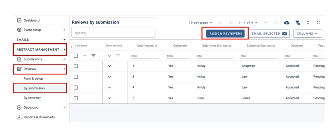
On the screen that pops up to your right, select the Manually Assign/Unassign tab.
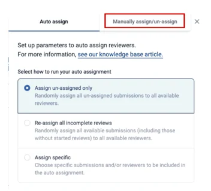
As shown in the image below, you can either select the specific submission/s by ticking the box next to the submission title on the left side of the screen (1) OR type the submission ID number into the box on the right-hand side (2).
You can also search for the submission by using the search bar at the top (3).
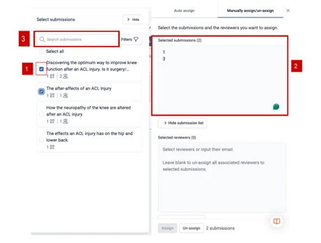
Next, you need to select the reviewer/s you wish to unassign from the submission.
Click on the Show Reviewers List button.
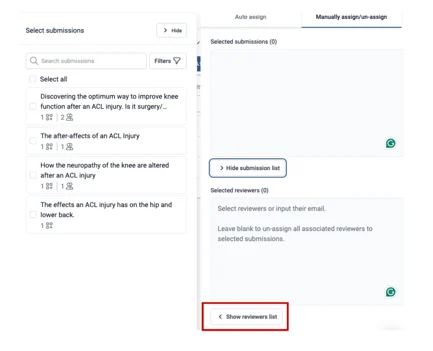
As shown in the image below, you can either select a specific reviewer/s by ticking the box next to their email address on the left side of the screen (1), OR type the reviewers email address into the box on the right-hand side (2).
You can also search for reviewers by using the search bar at the top (3).
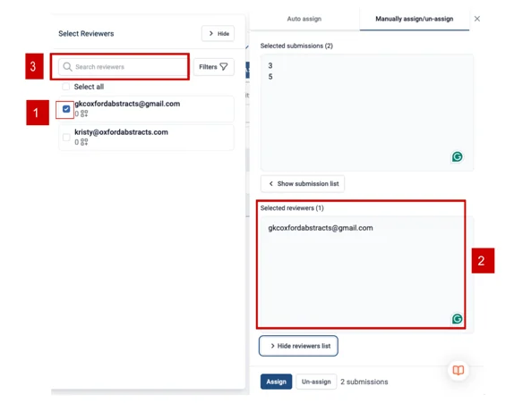
Once the submission and reviewer/s have been selected, click the Un-Assign button at the bottom of the page.
The reviewer will now be unassigned to that submission.
Should you need any further assistance, please contact our Support Team via our Contact Form.
Common questions#
If I remove a reviewer in Manage users, do I also need to unassign them from any assigned reviews?#
No, if you delete the reviewer, they will no longer have any assigned reviews. See Manage users and Assigning and unassigning a submission to a reviewer.
I need to assign a large number of submissions to several reviewers. Is there a quick way of doing this?#
See Assigning and unassigning a submission to a reviewer.
Allowing committee members to assign reviews#
You have the facility to allow committee members to assign reviews to reviewers, should you require. It is not available in the FREE package.#
Go to Event dashboard → Abstract Management → Reviews → Forms & Setup
Click on the toggle switch shown below to allow committee members to assign reviews (It will be shown as orange when enabled).
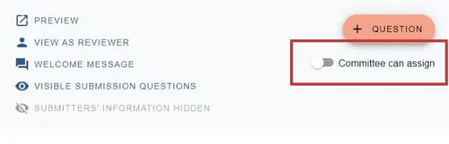
For instructions on how to assign reviews as a committee member, see
Didn't solve it? Ask our support team
No question is too small, and there's no charge for asking. Raise a ticket and someone who knows the software will pick it up.
Did this page solve it?
Thanks — this helps us fix it.